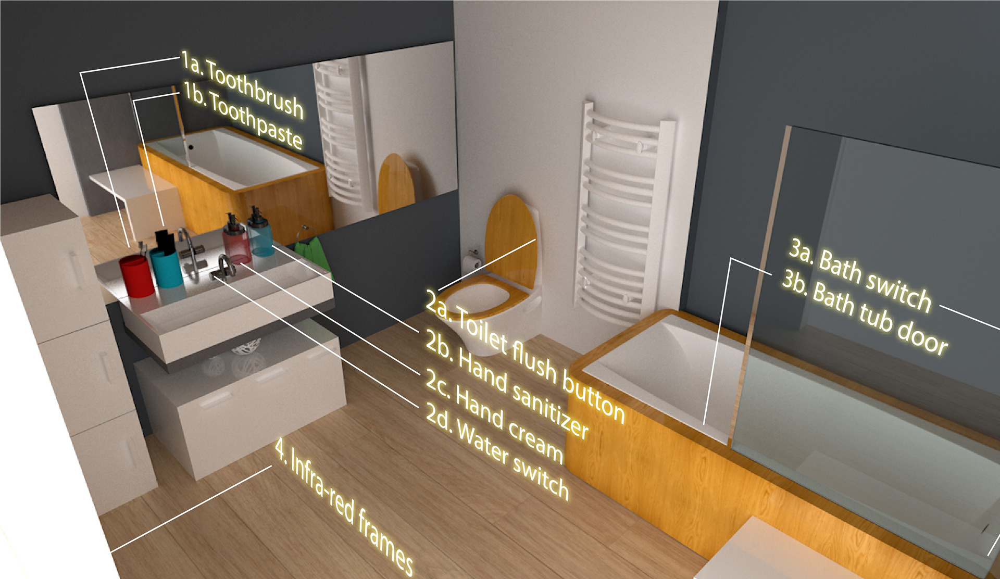
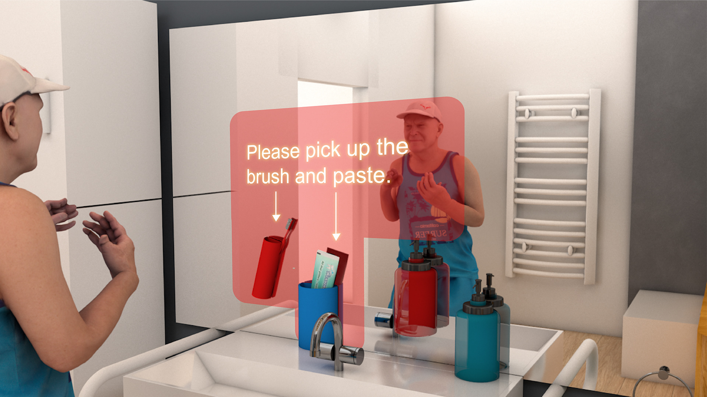
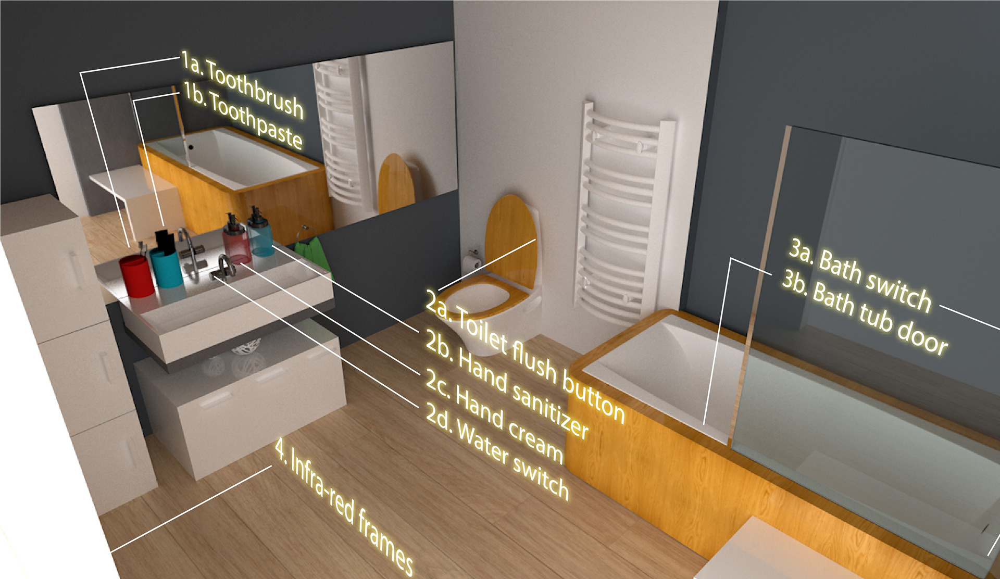
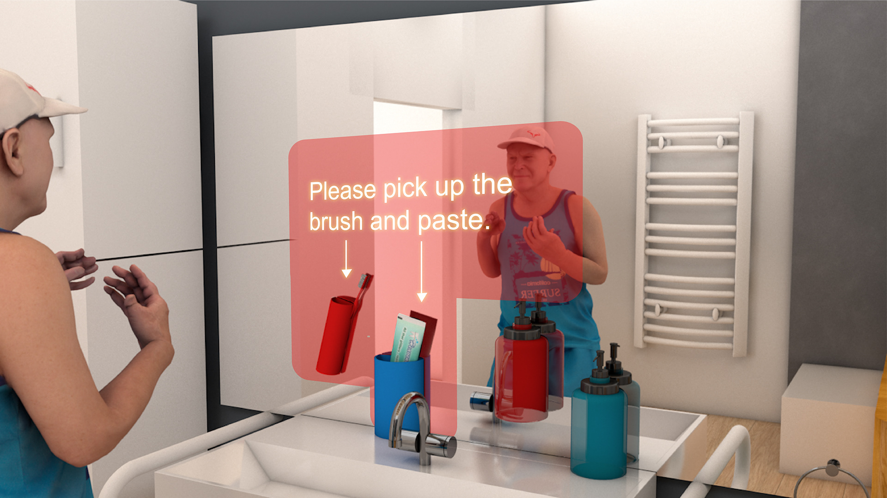

HiPal
Forgetfulness is an inevitable part of ageing, therefore seniors are more likely in need of some reminds. However, for seniors who are suffering from dementia, a remind might not be enough. This is because they not only forget the need to perform daily activities but also how. I feel sad for many early-stage dementia patients. Although physically intact, they still need help from caretakers to perform everyday tasks, including shower or bathe. Caretaker's present in the personal hygiene routine also means that the senior gives up on privacy. And I believe that everyone should have the opportunity to live independently with dignity – especially our senior populations. That's why I designed HiPal, a smart mirror system in the bathroom, to help seniors with early-stage dementia, to complete their hygiene routines just like they used to.
 


